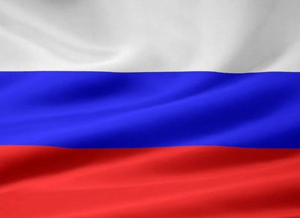

<!DOCTYPE html>
<html>
</html>
<head>
    <meta charset="UTF-8">
    <title>Россия-великая страна</title>
    <meta name="viewport" content="width=device=width, initial-scale=1.0">
    <link rel="stylesheet" href="css/style.css">
    <style>
        .top-menu {
  position: relative; 
  background: #fff;
  box-shadow: inset 0 0 10px #ccc;
}
.top-menu:before,
.top-menu:after {
  content: "";
  display: block;
  height: 1px;
  border-top: 3px solid #575350;
  border-bottom: 1px solid #575350;
  margin-bottom: 2px;
}
.top-menu:after {
  border-bottom: 3px solid #575350;
  border-top: 1px solid #575350;
  box-shadow: 0 2px 7px #ccc;
  margin-top: 2px;
}
.menu-main {
  list-style: none;
  padding: 0 30px;
  margin: 0;
  font-size: 18px;
  text-align: center;
  position: relative;
}
.menu-main:before,
.menu-main:after {
  content: "\25C8";
  line-height: 1;
  position: absolute;
  top: 50%;
  transform: translateY(-50%);
}
.menu-main:before {left: 15px;}
.menu-main:after {right: 15px;}
.menu-main li {
  display: inline-block;
  padding: 5px 0;
}
.menu-main a {
  text-decoration: none;
  display: inline-block;
  margin: 2px 5px;
  padding: 6px 15px;
  font-family: 'PT Sans', sans-serif;
  font-size: 16px;
  color: #777777;
  border-bottom: 1px solid transparent;
  transition: .3s linear;
}
.menu-main .current, .menu-main a:hover {
  border-radius: 3px;
  background: #f3ece1;
  color: #313131;
  text-shadow: 0 1px 0 #fff;
  border-color: #c6c6c6;
}
@media (max-width: 500px) {
  .menu-main li {display: block;}
}
    </style>
</head>
<body>
<style>
    body{
        background-color: #FA8072;
    }
</style>
<nav class="top-menu">
    <ul class="menu-main">
      <li><a href="Россия-Великая страна!.html" class="current">Главная</a></li>
      <li><a href="Герб.html">Герб</a></li>
      <li><a href="Гимн.html">Гимн</a></li>
      <li><a href="почему.html">почему же великая?</a></li>
    </ul>
  </nav>
  <center>
    <h1><i><p><strong><b>Флаг Российской Федерации</h1></strong></i></p></b>
    <marquee behavior="alternate" direction="left"></marquee> 
    <i><p><strong><b><span style="font-size: 25px; ">Флаг России (Госуда́рственный флаг Росси́йской Федера́ции) — один из официальных государственных символов Российской Федерации наряду с Государственным гербом и Государственным гимном.Синий – цвет веры и духовности. Красный символизирует державность, которая во все времена была присуща Российскому государству и нашему многонациональному народу.</p></i></strong></b></span>
    <center>
    <h1><i><p><strong><b>АВТОРЫ ФЛАГА:</h1></strong></i></p></b>
    </center>
    <ul>
    <li><i><p><strong><b><span style="font-size: 25px; ">«Автором» триколора считают императора Петра I</strong></i></p></b></li></span></i></p></b></li></span>
    </ul>
  <a href="https://ru.wikipedia.org/wiki/%D0%A4%D0%BB%D0%B0%D0%B3_%D0%A0%D0%BE%D1%81%D1%81%D0%B8%D0%B8">
    <button style="
    padding: 30px;
    border-radius: 40px;">Нажмите сюда для подробного изучения</button></a></center>
</center>
<center>
  <h1><font color="#000000">Для тех, кто не любит читать :)</h1></font>
  <iframe hspace="80" vspace="20" width="560" height="315" src="https://www.youtube.com/embed/T-Ten18cFsI?si=FMBiy1SXWtW78Fx-" title="YouTube video player" frameborder="0" allow="accelerometer; autoplay; clipboard-write; encrypted-media; gyroscope; picture-in-picture; web-share" allowfullscreen align="left"></iframe><iframe width="560" height="315" src="https://www.youtube.com/embed/z4hmVY1N2qA?si=eymxv8L0WQ_49ixC" title="YouTube video player" frameborder="0" allow="accelerometer; autoplay; clipboard-write; encrypted-media; gyroscope; picture-in-picture; web-share" allowfullscreen align="right" hspace="80" vspace="20"></iframe>
  </center>
</body>
</html>